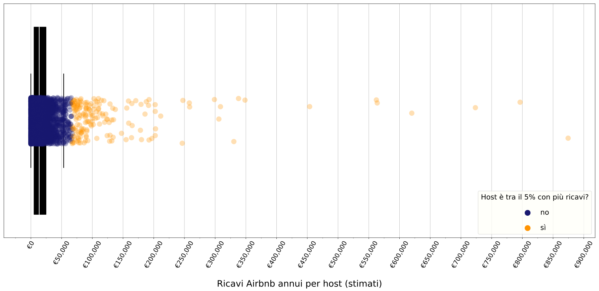
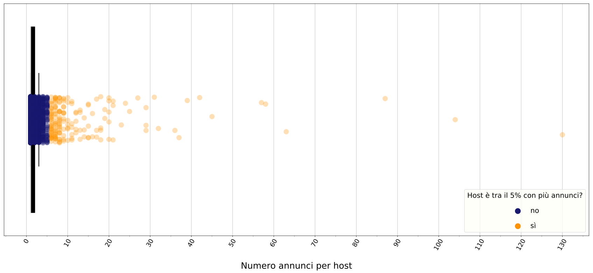

Venice
InsideAirbnb Infokit · 2018-06-08
Scarica il report in PDF
I numeri di Airbnb a Venezia
In data 2018-06-08 risultano presenti su Airbnb ben 7546 annunci per stanze o appartamenti nel Comune di Venezia.
7546 annunci totali
77% annunci è per case intere
60% annunci è prenotato 60+ notti l'anno
56% è di un host che affitta più case o stanze (mulithost)
Di questi, almeno 5436 possono definirsi attivi, avendo ricevuto una recensione - e dunque una prenotazione - negli ultimi 6 mesi.
In rapporto alla popolazione e allo stock abitativo locale, questo numero significa che ci sono circa 3 annunci ogni 100 residenti del Comune, e 5 annunci ogni 100 alloggi.
Il 77% degli annunci è un annuncio per affittare una casa intera, e non una stanza, dunque con un maggior peso in termini di posti letto destinati al turismo. Sulla base delle recensioni ricevuto dagli ospiti e del fatto che Airbnb stessa ha definito come 2.2 notti la lunghezza media di un soggiorno a Venezia, si stima inoltre che il 60% degli annunci sia stato occupato per più di 60 notti l'anno. Soprattutto considerato che difficilmente un annuncio è occupato per tutto il tempo per cui è reso disponibile, questa cifra indica che quasi 2 annunci ogni 3 riguardano spazi sottratti al mercato residenziale.
Fonte: InsideAirbnb

San Francisco è stata una delle prime città a studiare il fenomeno di Airbnb e l’impatto dell’economia da esso promossa sul tessuto urbano cittadino. Nel report del San Francisco Budget Analyst’s Office, si procede a conteggiare il numero di annunci e host che utilizzano Airbnb in maniera definita “commerciale”, operando cioè come un regolare albergo ma sfuggendo a norme di regolamentazione urbanistica e sottraendo alloggi ai residenti. Nel report, si definisce come commerciale un annuncio che viene effettivamente occupato per più di 58 giorni l’anno,se si tratta si un annuncio per una stanza intera; o per più di 88 giorni l’anno, nel caso si tratti di un annuncio per una stanza. Tale definizione è un’utile demarcazione in quanto, affinché un annuncio possa essere occupato per così tanti giorni l’anno, esso probabilmente è reso disponibile per almeno il doppio del tempo. E questo considerando un tasso di occupazione del 50%, come Aribnb suggerisce di considerare, che è comunque alto. Tale definizione mira quindi a includere nella categoria di “commerciale” tutti quegli annunci che presuppongono una non-occasionalità della locazione turistica e che comportano la probabile sottrazione dell’immobile dal numero degli alloggi disponibili per i residenti, dato l’alto numero di giorni in cui sono disponibili ad ospitare turisti. 58% annunci commerciali A Venezia, utilizzando questa definizione, il 58% degli annunci può essere definito “commerciale”. E se si guardano solo gli annunci attivi, questa cifra arriva al 78%.
Fonte: InsideAirbnb

42% più annunci in un anno Rispetto allo stesso periodo dell'anno scorso, gli annunci presenti sulla piattaforma per la città di Venezia sono aumentati di 2248 unità (crescita del 42%).
Distribuzione geografica ineguale
Gli annunci non sono distribuiti uniformemente nel territorio del Comune. Il 77% si trova nel Centro Storico, mentre solo il 6% in Estuario e il 17% in .
Fonte: InsideAirbnb

Nel Centro Storico di Venezia
11 annunci ogni 100 residenti
7% degli alloggi è su Airbnb
In rapporto agli abitanti, questo significa che nel Centro Storico ci sono 11 annunci di Airbnb ogni 100 residenti. Questo numero si ferma a 1 in Estuario e a 2 in Terraferma.
In rappporto allo stock abitativo totale, vuol dire che circa il 7% delle case del Centro Storico è su Airbnb.
Le case probabilmente sottratte ai residenti, ovvero gli annunci per una casa intera affittati per più di 60 notti l'anno, sono 3354 (44% del totale annunci). Di queste, il 82% - 2766 case/annunci - nel Centro Storico.
Fonte: InsideAirbnb

In confronto, questa è la distribuzione geografica del numero di posti letto disponibili nel Comune, in strutture ricettive regolari (attività ricettiva alberghiera e extralberghiera).
Queste immagini sono utili come spunto per una serie di indagini più approfondite. Innanzitutto, confrontare i numeri assoluti degli annunci di Airbnb con i numeri di struttre e posti letto delle attività ricettive permette di comprendere la mole del fenomeno Airbnb in relazione al numero delle strutture registrato presso il Comune. La distribuzione geografica di tali numeri, permette inoltre di chiedersi quanto l'offerta su Airbnb sia similare o complementare all'offerta ricettiva tradizionale. Un primo passo dunque per interrogarsi su quale possa essere il suo impatto sulle dinamiche locali - a livello cittadino e di quartiere. Per esempio, se l'offerta di posti letto rispecchia le dinamiche del settore ricettivo tradizionale, c'è da domandarsi se davvero Airbnb stia proponendo ai suoi guest quel turismo “sano”, di redistribuzione dei flussi turistici, di cui spesso si vanta. D'altra parte, se l'offerta si concentra in maniera squilibrata in zone tipicamente non-turistiche, allora c'è da chiedersi quali siano le conseguenza di questa “perturbazione turistica” sulla vita sociale ed economica dei residenti che le abitano.
Distribuzione dei ricavi poco condivisa
Secondo Airbnb, un host veneziano che affitta un appartamento intero per 2 ospiti, guadagna in media €1602 al mese, ovvero €19224 l'anno.
I dati di InsideAirbnb sembrano confermare un simile valore mediano, ma allo stesso tempo permettono anche un'analisi più dettagliata della distribuzione delle risorse e degli equilibri nell'economia “condivisa” sostenuta dalla piattaforma. Tale analisi suggerisce che i ricavi generati non siano affatto distribuiti in maniera condivisa tra gli utenti della piattaforma, ma che pochi host concentrino il grosso del guadagno, in maniera quindi ben poco “condivisa”.
Considerando solo gli annunci attivi almeno una volta negli ultimi mesi, secondo i dati di InsideAirbnb, il ricavo annuale mediano di un host è stimato a €16365, mentre quello medio a €25278. €16365 il ricavo annuo mediano (stima)Un appartamento intero rende l'anno circa €12891, come valore mediano. Una stanza privata invece €8375. Ci sono ovviamente differenze geografiche: il ricavo mediano nel Centro Storico per una casa è di €14317, mentre scende a €7669 in Estuario e a €12699 in Terraferma.
130 il numero di annunci dell'utente con più annunciI valori mediani e medi per annuncio offrono una visione limitata della realtà; ci sono infatti molte distinzioni da fare. Già la discrepanza tra valore mediano e valore medio ci suggerisce come i ricavi non siano distribuiti in maniera equa, ma ci sia una minoranza con molti più ricavi degli altri. Ed è così - basti considerare, per esempio, che il ricavo massimo annuale per un host è di €874530 e che un host arriva ad avere 130 annunci.
Su Airbnb, il 5% degli host con più annunci possiede il 32% degli annunci totali e il 5% degli host con il più alto profitto vede entrare nelle proprie tasche il 31% del totale generato dagli annunci su Airbnb a Venezia. Il due grafici seguenti provano a illustrare questa distribuzione: considerate che tutti i pallini blu scuro, messi assieme, coprono il 95% degli host.
Fonte: InsideAirbnb

Fonte: InsideAirbnb

26% host controlla il
61% degli annunciTali valori sono possibili perchè, di fatto, sulla piattaforma abbondano host che affittano decine e decine di appartamenti, gestendo quello che, più che un tradizionale “home sharing”, sembra una rete di piccole strutture turistiche decentralizzate per la città. Il 26% degli host controlla il 61% degli annunci. Le seguenti tre mappe mostrano la distribuzione degli annunci per i tre host che gestiscono più alto numero di annunci.
Questa tabella mostra i 10 host con più annunci Airbnb a Venezia
| Nome | Link | Annunci Totali | Annunci per Appartamenti | Descrizione Host |
|---|---|---|---|---|
| Faville - Juice | https://www.airbnb.com/users/show/289615 | 130 | 130 | Hello! We are young ladies working at Faville Tours and Juice Glam agencies. We love our city: Venice is unique and magic! Discover our city staying at our apartments located in the heart of Venice. Our purpose?! It's do the best to ensure you a memorable and sspecial stay in Venice! And apart from accommodation, make your stay more comfortable booking with us extra services as parking, private transfers, excursions and guided tour. |
| City Apartments | https://www.airbnb.com/users/show/2634978 | 104 | 104 | Siamo un'agenzia veneziana formata da un gruppo di persone affiatate che lavorano in squadra per fornire al cliente il massimo dell'ospitalità. Da 2 anni lavoriamo nelle locazioni turistiche e quindi abbiamo parecchia esperienza che mettiamo a disposizione dei nostri clienti. Ci auguriamo di fare sempre meglio e di farvi vivere un'esperienza indimenticabile nella città più bella del mondo. |
| Rent It Venice | https://www.airbnb.com/users/show/14357135 | 87 | 87 | Property manager Rent it Venice nasce per poter soddisfare la forte richiesta di appartamenti turistici sulla città di Venezia\Mestre. Già specializzati e leader del settore per le affittanze tradizionali con il marchio Planning Pool, abbiamo strutturato una divisione di professionisti che ha come obbiettivo il difficile compito di far trascorrere una indimenticabile vacanza al turista che voglia soggiornare nelle nostre strutture, noi ci occupiamo di tutto, dall’accoglienza alle pulizie fino alla gestione/manutenzione dell’intero alloggio. |
| Raffaella | https://www.airbnb.com/users/show/10189388 | 63 | 63 | Hello everybody, we are all Venetian natives and love our beautiful city! It'll be a pleasure to you to be welcomed by people loving and knowing Venice like no one else! We manage many properties and try to be as helpful as possible! We do our best every day in order to satisfy your requests. Let's contact us for further info about our apartments, city itself and curiosities! We look forward to meet you in magical Venice! |
| Chicca | https://www.airbnb.com/users/show/104994977 | 58 | 58 | |
| ViewsOnVenice | https://www.airbnb.com/users/show/669047 | 57 | 57 | I’m Co-founder and Director of Views on Venice and have over 2 years’ experience in the Venetian short rentals and luxury rentals market. I have grown up within my family’s 15th Century palace on the Grand Canal where I live today with my young family. My loves include travel, scuba diving, fine wine… and Venice! |
| Caroline E Marco | https://www.airbnb.com/users/show/3972291 | 45 | 45 | The Red House Company is a property management organization that operate in Venice delivering top quality apartments to international visitor's and tourists that want to experience Venice from a different point of view. Living the town at a citizen level instead of the classic and anonymous Hotel stay. We have registered as a company after one year of web marketing consultancy and we now manage various property in Venice with a high standard service and personal relationship with ll our guests. The Red House manages properties of different owners and we have built a reputation thru our quality and intense attention to details and guest's satisfaction. |
| EasySuite | https://www.airbnb.com/users/show/5618111 | 42 | 42 | |
| Mirco Optyflat | https://www.airbnb.com/users/show/46904188 | 39 | 38 | |
| Abaca | https://www.airbnb.com/users/show/17534457 | 37 | 37 | Welcome in Venice! |
Scorrendo le descrizioni dei profili dei vari host su Airbnb, ci si accorge che alcune sono strutture ricettive tradizionali, come Bed & Breakfast. Strutture che sono sempre esistite anche prima di Airbnb e che utilizzano la piattaforma per pubblicizzare la propria attività online. Airbnb è per loro quindi un po’ come Booking o Expedia: un modo come un altro per offrire il proprio servizio, nulla a che fare con l’economia condivisa. Diversi altri profili rientrano invece nella categoria di booking managers e agenzie immobiliari: attività professionali che gestiscono appartamenti da affittare ai turisti per conto dei proprietari. Proprietari che di veneziano e locale magari hanno ben poco, se non una o più case vuote da affittare a turisti quasi tutto l’anno. Come si può evincere dalle descrizioni di alcuni di questi “host”, talvolta nemmeno l’agenzia o l’intermediario è davvero del luogo, ma opera in tutta Italia o addirittura in tutta Europa o nel mondo. L’agenzia fa così da prestanome all’annuncio, aggiungendo un livello di ambiguità e occultando qualsiasi informazione identificativa sul proprietario - dati che invece potrebbero essere utili anche alle autorità per fini fiscali e di controllo. Alcuni degli host che operano in questo campo lo fanno in maniera dissimulata, gestendo decine e decine di appartamenti ma avendo un profilo in cui ci si presenta come un nome proprio, da privato cittadino.
Stimare in maniera automatizzata il numero di property managers e simili è difficile, proprio perchè molti non lo dichiarano nemmeno. Un primo approccio, che senza dubbio porta a una stima al ribasso, è quello di verificare in quanti profili appaiono frasi come “agente immobiliare” o “property manager” (v. note metodologiche per lista di parole utilizzate). Con questo metodo, risulta che questa tipologia di host è sì una minoranza (1%), ma gestisce il 10% degli annunci e accentra il 8% dei ricavi
4% il ricavo generato da host non-commerciali.Alla luce di tutto ciò, è chiaro che sulla piattaforma si trovano annunci e profili di diverse tipologie, e che l'impatto di ciascuno sulle dinamiche economiche e residenziali locali varia in funzione di questo. Sorge allora la domanda: quanti sono gli host che usano effettivamente Airbnb in maniera non professionale, per affittare quello che probabilemente è il loro luogo di abitazione usuale? Stando agli ultimi dati, solo il 27%, che gestisce il 20% degli annunci totali e che si stima percepisca il 4% dei ricavi totali annui generati grazie alla piattaforma.

Come si vede dal grafico, nonostante siano in molti, gli host non-commerciali generano una parte minima dei ricavi in rapporto al volume totale. Airbnb guadagna in percentuale sui ricavi degli host e dei guest e, se dovesse limitare l'uso della piattaforma solamente a questa tipologia di host, vedrebbe i suoi profitti falciati. Si può ben immaginare dunque quanti pochi incentivi ci siano affinchè Airbnb, di sua spontanea volontà, decida di limitare l'uso della piattaforma a chi davvero condivide i suoi spazi, senza sottrarre risorse ai residenti.
Studi e notizie
Italiano
- Picascia S.,Romano A.,Teobaldi,M., The Airification of Cities, LADEST · Università di Siena. (2017)
Internazionale
- San Francisco Budget and Legislative Analyst’s Office, Analysis of the impact of short-term rentals on housing, City of San Francisco. (2015)